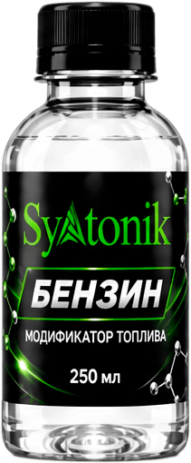
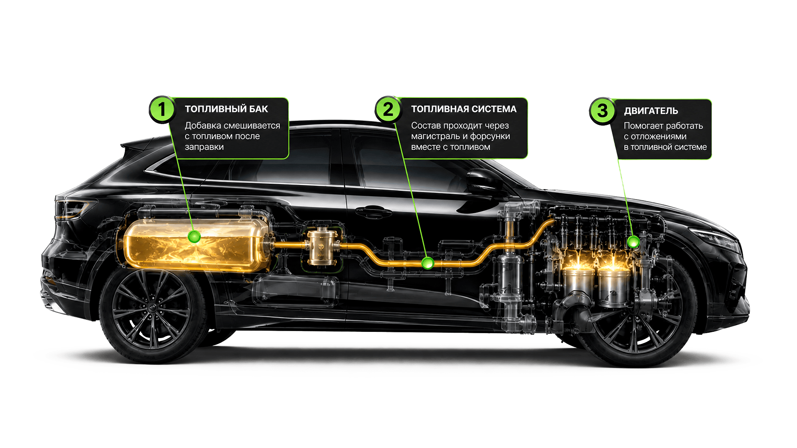
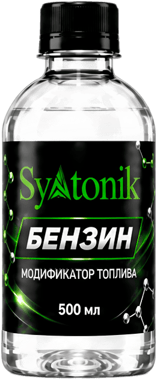
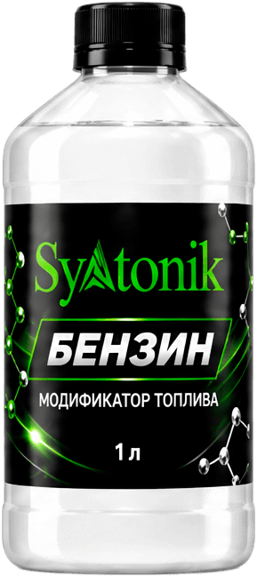
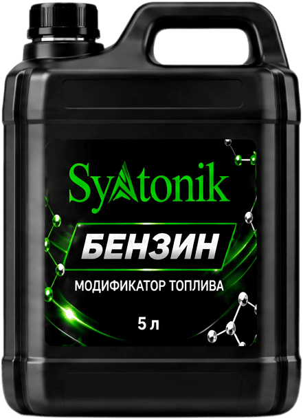
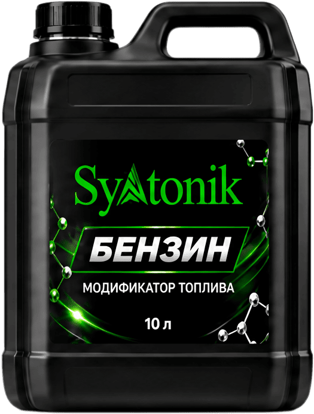

Топливные решения нового поколения
Экономия
на топливедо 35%
Помогает снизить расход и поддерживать топливную систему в чистоте
Экономия топлива
Защита системы
Совместимо с любым топливом
220 ₽на 100 литров
Ситуация на рынке
Новый уровень цен
Подорожал не один вид топлива — вырос весь топливный чек.
| Вид топлива | Было (₽/л) | Стало (₽/л) | Рост |
|---|---|---|---|
| АИ-92 | 63 ₽ | 75 ₽ | +18% |
| АИ-95 | 69 ₽ | 81 ₽ | +17% |
| АИ-98 | 93 ₽ | 103 ₽ | +11% |
| АИ-100 | 97 ₽ | 108 ₽ | +11% |
| Дизель | 78 ₽ | 88 ₽ | +13% |
Средние розничные цены по данным открытого мониторинга АЗС.

Добавка к топливу
Для бензина, дизеля, мазута и ГБО
Концентрированный модификатор проходит вместе с топливом через всю систему и работает с отложениями при обычной эксплуатации.
Очищает систему
Работает с нагаром, лаковыми и серными отложениями в топливной магистрали.
Улучшает сгорание
Повышает полноту сгорания топлива и КД двигателя.
Снижает расход
Экономия топлива до 35% — по данным замеров на сопоставимых маршрутах.
Защищает двигатель
Чистая топливная система — меньше износа свечей, форсунок и ТНВД.
Бензин
1 мл на 10 л топлива
Было 10 л/100 км → стало 7 л/100 км
Дизель
1 мл на 10 л топлива
Было 30 л/100 км → стало 22,5 л/100 км
Мазут
1 мл на 10 л топлива
Было 100 л/100 км → стало 80 л/100 км
ГБО
1 мл на 10 л топлива
Было 12 л/100 км → стало 9 л/100 км
Как это работает
Три шага до экономии
1
Добавьте в бак
Залейте дозировку по инструкции — 1 мл на 10 литров топлива.
2
Заправьте топливо
Добавка смешивается с топливом и распределяется по всей системе.
3
Двигайтесь и экономьте
Чем больше пробег — тем чище система и заметнее результат.

Технологии чистого движения
Как работает с топливом
Состав проходит вместе с топливом через систему и применяется по инструкции для работы с отложениями. Чем больше пробег — тем заметнее результат.
Рассчитать экономиюРезультат в цифрах
Расход до и после применения
Бензин
Экономия до 35% Легковые авто / город и трасса- Было
- 10 л / 100 км
- Стало
- 7 л / 100 км
Дизель
Экономия до 35% Грузовые авто / спецтехника- Было
- 8 л / 100 км
- Стало
- 6 л / 100 км
Мазут
Экономия до 35% Промышленный транспорт / оборудование- Было
- 100 л / ч
- Стало
- 80 л / ч
Онлайн-расчёт
Экономия
в рублях
Укажите пробег и расход — покажем разницу в литрах и деньгах.
100 л10 мл220 ₽
Стоимость обработки 100 литров топлива.
~608 ₽1000 км / месяц
~1 216 ₽2000 км / месяц
~1 824 ₽3000 км / месяц
Пример для бензина: 10 л/100 км, 80,60 ₽/л, сценарий снижения расхода 10%. Стоимость добавки учтена.
Технология чистого движения
Результат подтверждён
Испытания, сертификаты и контроль качества. Никаких обещаний — только факты.
Производство в РоссииООО «Торговый дом Элемент», Самара
Заказать
Каталог
Выберите объём
Одна дозировка — разные объёмы под ваш расход топлива.
250 млдо 2 500 л топлива
Нет в продаже
Спросить




Также доступны объёмы 2 л — 44 000 ₽, 3 л — 66 000 ₽ и 4 л — 88 000 ₽. Условия и стоимость доставки согласуются до оплаты заказа.
Пробный объём
30 мл до 300 л топлива
- Достаточно для нескольких заправок
- Сравните расход на своём маршруте
- Нет в продаже — доступен по запросу
Как проверить результат
- Зафиксируйте расход до применения
- Используйте модификатор по инструкции
- Сравните результат на постоянном пробеге
Реальные люди. Реальные результаты
Результат в цифрах
Расход до и после применения — на реальном пробеге и сопоставимых маршрутах.

Бензин · легковой автомобиль
Toyota Camry 2.5
10,2 8,9 л / 100 км
−1,3 л/100 км · экономия до 13%
Пробег теста1 200 км
Экономия4 850 ₽
Результатна маршруте

Дизель · кроссовер
Volkswagen Tiguan 2.0 TDI
8,6 7,7 л / 100 км
−0,9 л/100 км · экономия до 10%
Пробег теста1 500 км
Экономия3 950 ₽
Результатсмешанный

Коммерческий транспорт · лёгкий грузовик
ГАЗель Next
16,8 15,1 л / 100 км
−1,7 л/100 км · экономия до 10%
Пробег теста2 800 км
Экономия12 600 ₽
Результатна маршруте
Одинаковые погодные условия
Сопоставимые маршруты
Один и тот же вид топлива
Замеры до и после применения
Вопросы и ответы
Перед заказом
Коротко отвечаем на вопросы, которые обычно возникают перед первым применением.
Как выбрать продукт?
Бензин — для бензиновых двигателей. Дизель — для дизельных. Мазут — для соответствующего топлива и оборудования. ГБО — для газобаллонного оборудования.
Сколько добавлять?
Бензин: 1 мл на 10 л топлива. Дизель: 1 мл на 10 л. Мазут: 1 мл на 10 л. ГБО: 1 мл на 10 л.
Когда добавлять?
Перед заправкой — непосредственно в топливный бак, чтобы добавка равномерно смешалась с топливом.
Когда сравнивать расход?
На сопоставимом маршруте и в похожих условиях эксплуатации: одинаковый стиль вождения, аналогичная погода и загрузка.
Можно ли использовать постоянно?
Использовать согласно инструкции производителя. Регулярное применение поддерживает чистоту топливной системы.
Можно ли смешивать с другими добавками?
Не смешивать без подтверждённой совместимости.
Где посмотреть документы?
Протокол испытаний, сертификат, паспорт безопасности и инструкция доступны в разделе «Результат подтверждён».
Реальные отзывы
Что говорят владельцы
Замеры расхода от водителей: легковые авто, грузовики и такси — с видео и цифрами.
Toyota RAV4 2.0
9,35,7л/100 км
Раньше расход 9,3 л/100 км, а с Syntonik — 5,7 л. Экономия 3,6 литра на 100 км.
−3,6 лИсточник: Telegram ↗
КАМАЗ
—−4,8литра
На КАМАЗах экономия 4,8 литра! Чем больше пробег с Syntonik, тем меньше лака в топливной и двигателе.
−4,8 лИсточник: Telegram ↗
Лада Веста 1,8
11,78,8л/100 км (город)
3500 км пробега: город 11,7–12 → 8,8, трасса от 8 → 5,5–7,2. Эндоскопию делал — подтверждено.
−2,9 лИсточник: Telegram ↗
Блог
Полезные материалы
Инструкции, методика замеров, разбор состава и кейсы реальных владельцев.

Дозировка Syntonik: сколько лить на бак
Сколько миллилитров на 50 и 100 литров, чем отличается дозировка для бензина, дизеля, мазута и ГБО.
Читать статью →
Как проверять расход до и после
Пошаговая методика честного замера: как убрать погрешность и увидеть реальную разницу.
Читать статью →
Как Syntonik снижает расход топлива
Что происходит в топливной системе: очистка отложений, полнота сгорания и экономия до 35%.
Читать статью →Готовы начать
Рассчитайте свою экономию уже сегодня
Подберём объём под ваш пробег, ответим на вопросы и поможем оформить заказ. Консультация бесплатна.